Ponúkame Vám na predaj 4-izb. rodinný dom vo Dvoroch nad Žitavou .
Dvory nad Žitavou
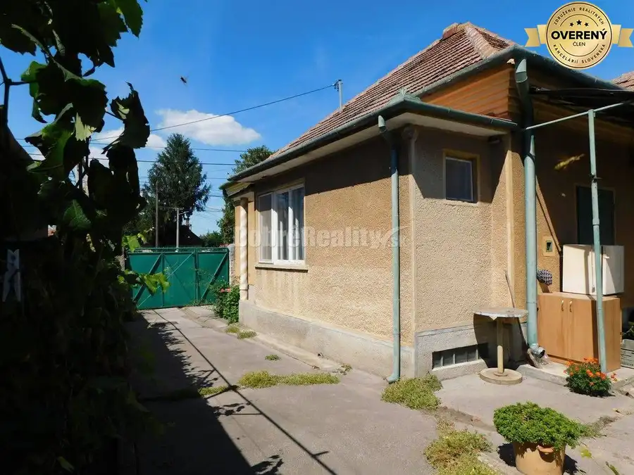
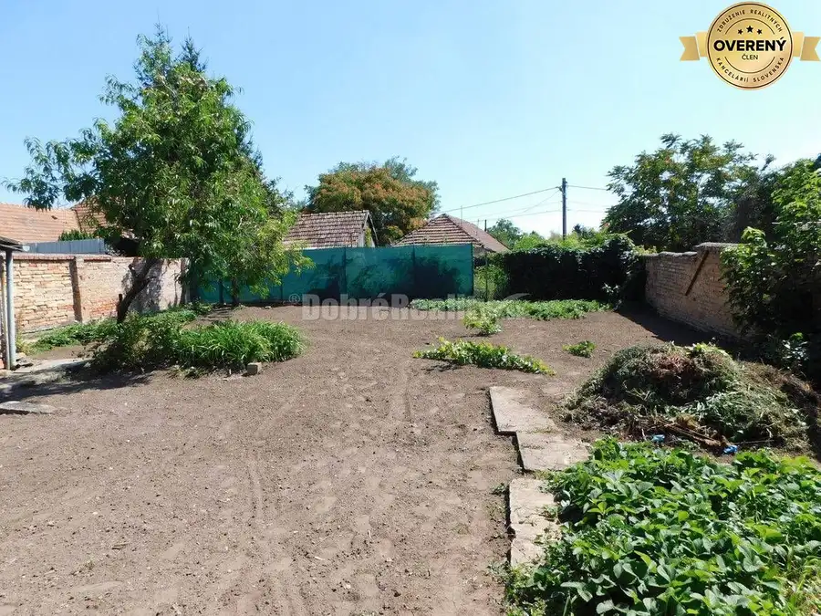
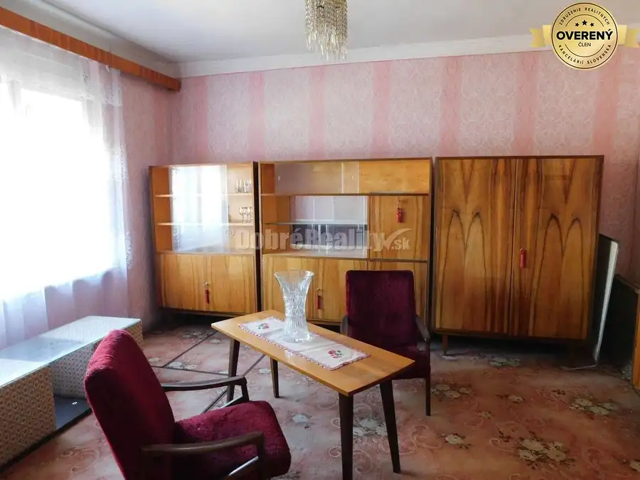
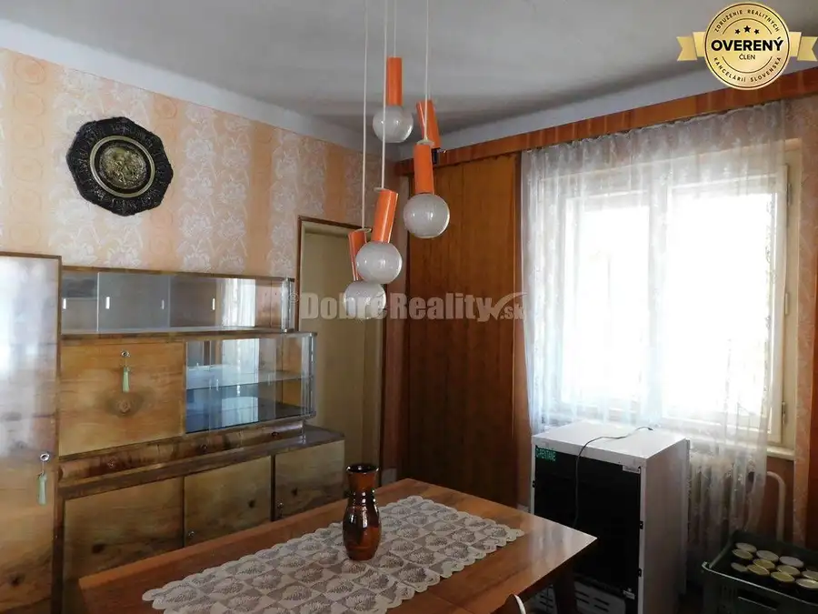
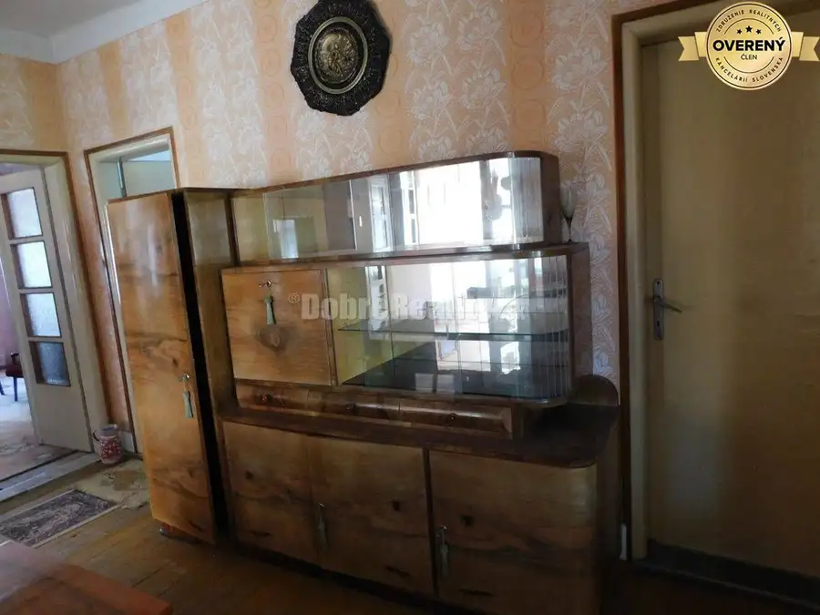
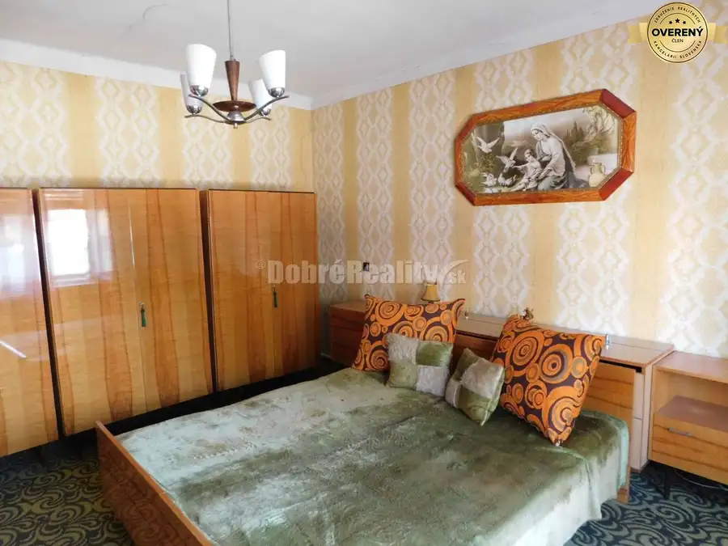
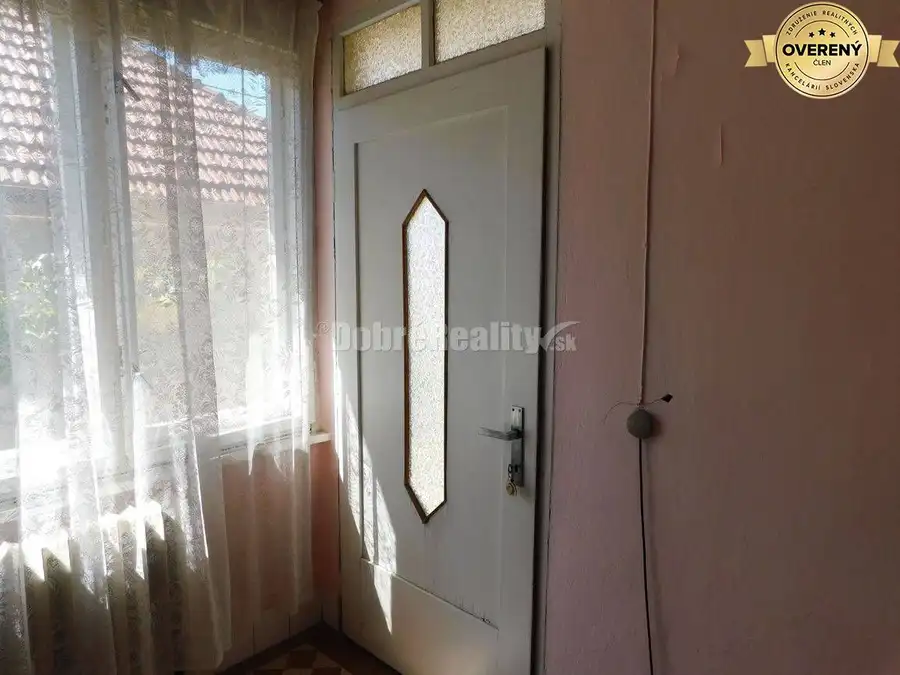
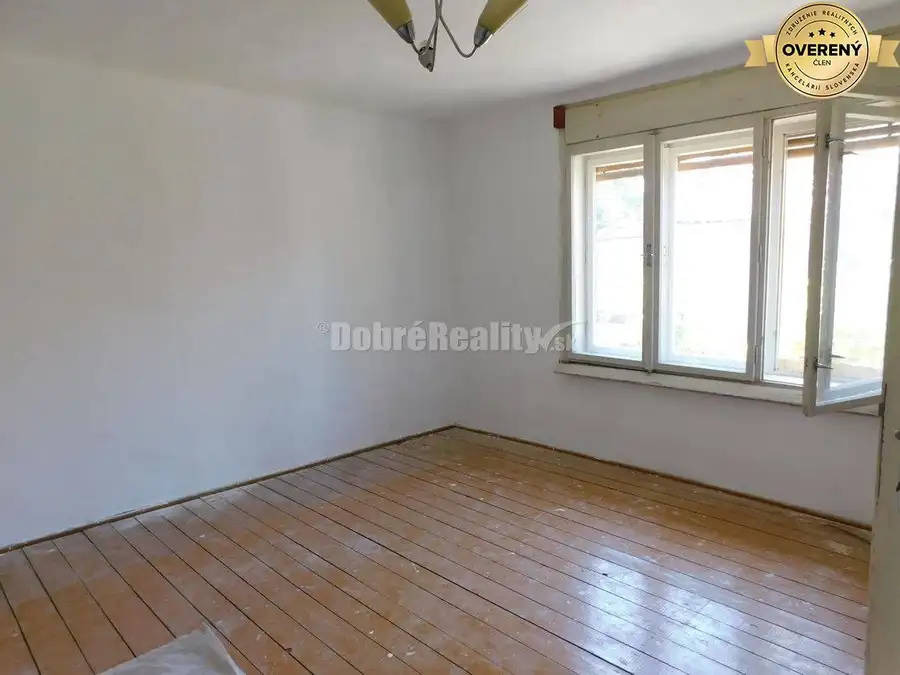
- Plocha125 m²
- Stavpôvodný
- Vlastníctvoosobné
O nehnuteľnosti
Dom bol postavený cca v roku 1965
Základné údaje:
- veľkosť parcely: 575 m2
- zastavaná plocha domu: 125 m2
- letná kuchyňa 17 m2
Dispozícia rodinného domu:
- chodba, 4 izby, kúpeľňa, wc , kuchyňa, špajza.
Popis rodinného domu:
- stavebný materiál: tehla
- 2x vchodové dvere : pôvodné
- strecha: škridla,
- okná: pôvodné
- podlahy – drevená palubovka, dlažba
- vykurovanie – plynové kachle, radiátory s kotlom na tuhé palivo
- voda: zo studne, obecná voda pred domom, elektrický bojler na teplú vodu
- žumpa, kanalizácia pred domom
- elektrika 230/380
Technický stav domu :
Dom je v pôvodnom stave. Ideálne pre mladé rodiny, ktoré si môžu prerobiť podľa vlastných predstáv, nakoľko je dobre dispozične riešený.
Na dvore sa nachádza aj garáž. Dom je podpivničený. Jed dostatok miesta na altánok, na bazén.
Záhrada je udržiavaná.
Parkovanie- v garáži, vo dvore, pred domom.
V dedine je kompletná občianska vybavenosť.
Nachádza sa tu maď.+slov. škola, škôlka, nákupné centrá , poliklinika, lekáreň, pošta, reštaurácie.
Táto dedina je veľmi vyhľadávaná a veľmi obľúbená nakoľko 8 km sa nachádza okresné mesto Nové Zámky. Podhájska je 20 km, Štúrovo 40km , Nesvady 18 km.
V prípade záujmu alebo potreby ďalších informácií ma kontaktujte na telefónnom čísle : - Diana Vargová
Dobré Reality klientom poskytujú komplexné služby realitného sprostredkovania a celoslovenskú internetovú inzerciu. Už viac ako 10 rokov nám dôverujú tisícky klientov.
Hľadáme nových kolegov a ponúkame najvýhodnejšie podmienky! K nášmu tímu profesionálnych obchodníkov s nehnuteľnosťami sa môžete pridať na: dobrereality.sk/kariera
Parametre
- Rozloha pozemku
- 575 m²
- Zastavaná plocha
- 125 m²
- Úžitková plocha
- 125 m²
- Počet poschodí
- 1
- Vlastníctvo
- osobné
- Stav
- pôvodný
- Status
- aktívne
- Odvoz odpadu
- áno
- Voda
- verejný vodovod
- El. napätie
- 230/400V
- Plyn
- áno
- Kanalizácia
- žumpa
- Internet
- wifi
- Kúpeľňa
- vaňa
- Vykurovanie
- vlastné – kombinované
- Balkón
- nie
- Lódžia
- nie
- Terasa
- nie
- Pivnica
- áno
- Garáž
- áno
- Parkovanie
- vnútorné
- Inžinierske siete
- áno
- Postavené z
- tehla
- Zariadenie
- čiastočne
- Zateplený objekt
- nie
- Strecha
- pôvodná
- Energetický certifikát
- nie
- Predzáhradka
- áno
- Okná
- drevené
- Terén
- rovina
- Prístupová cesta
- asfaltová cesta
- Dátum zverejnenia
- 2025-08-27
Kde to je
Mohlo by Vás zaujímať
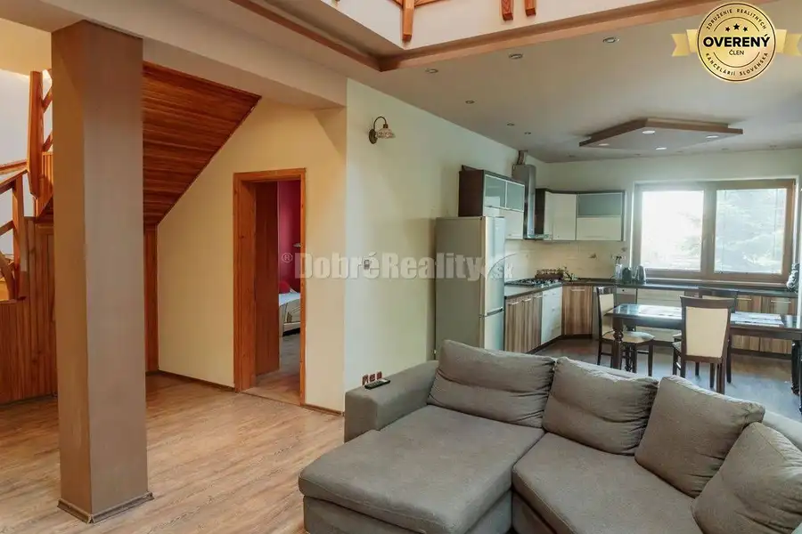
Rodinné domyNové 280 000 €Ponúkame na predaj 2 rodinné domy na jednom pozemku v obci Dvory nad Ž Dvory nad Žitavou 230 m²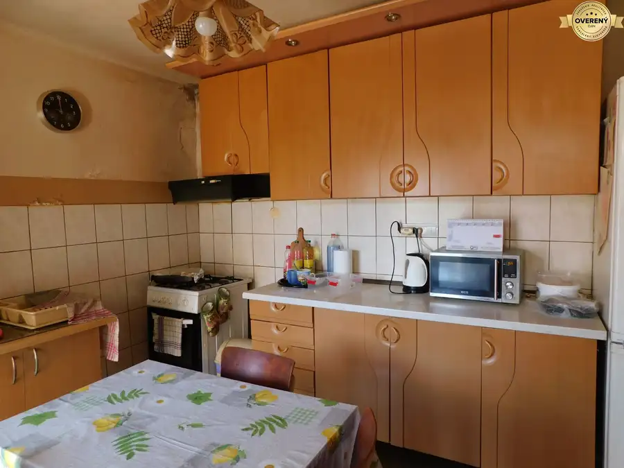
Rodinné domyNové 63 000 €Na predaj 5-izbový rodinný dom s veľkým pozemkom – Dvory nad Žitavou Dvory nad Žitavou 110 m²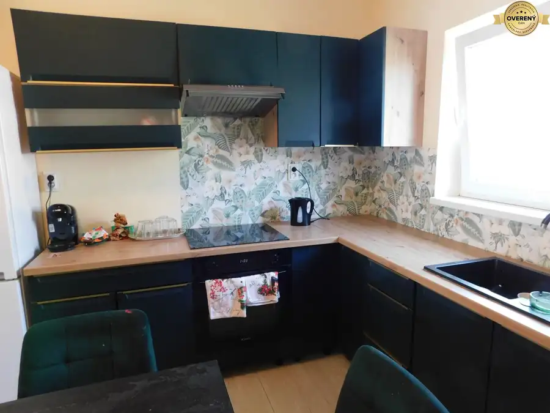
Rodinné domyNové 109 000 €Ponúkame na predaj 3-izb. rodinný dom v obci Dvory nad Žitavou. Dvory nad Žitavou 112 m²